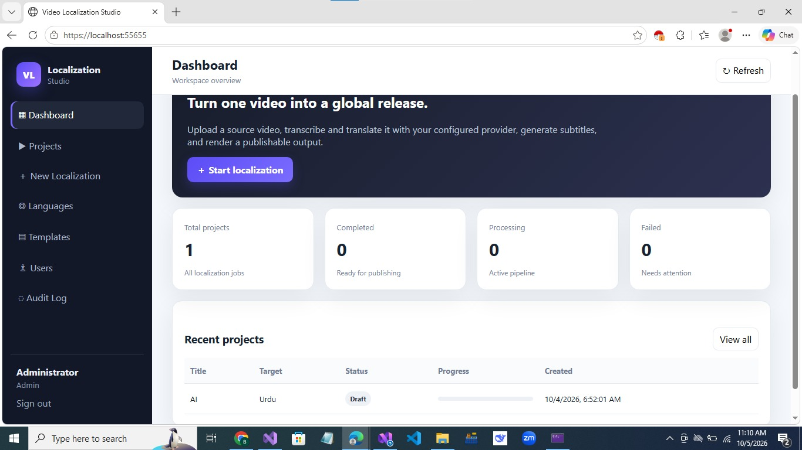
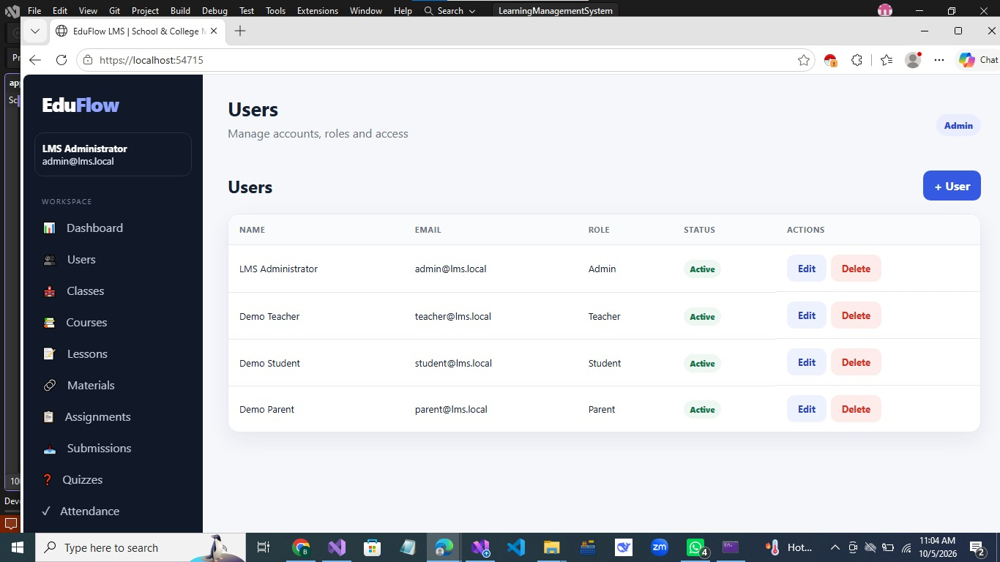
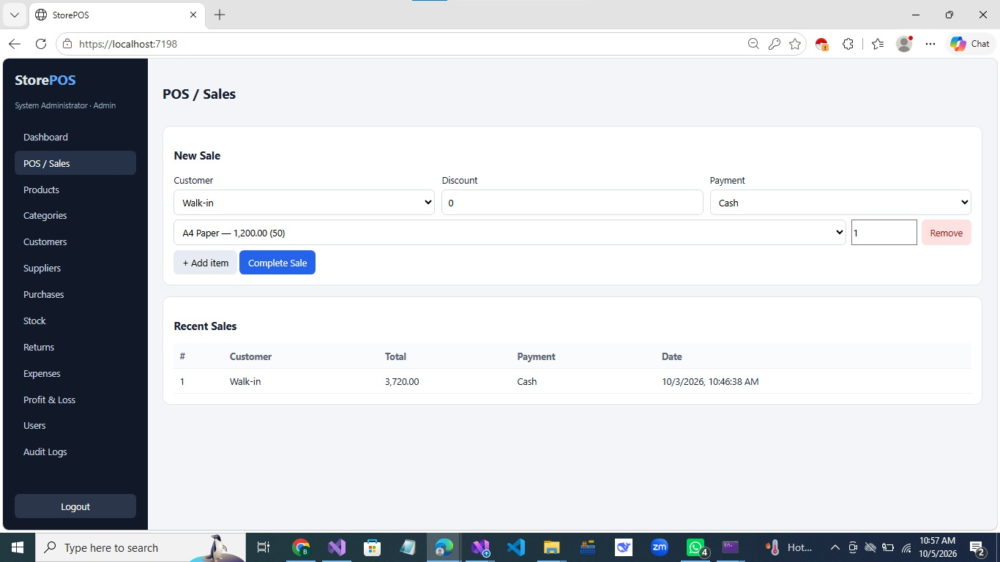
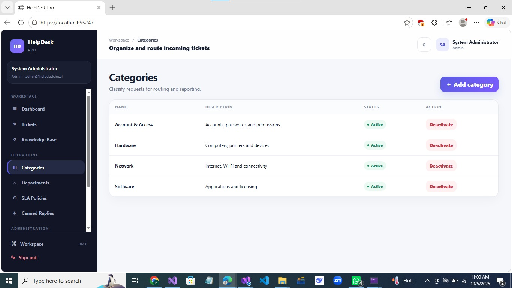
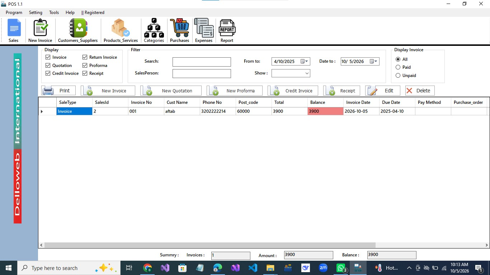
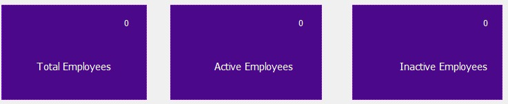
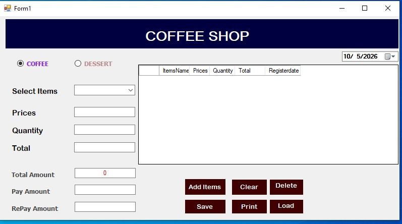
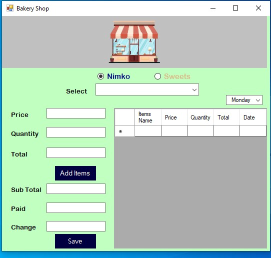

01 · AI
AI Video Localization Agent
Multilingual video localization concept and implementation pipeline for transcription, translation, TTS, subtitles and rendering.
PythonAIFFmpeg
Repository in developmentSelected GitHub projects across ASP.NET Core, WinForms, business applications and AI. Featured work is shown first, with additional projects below.

Multilingual video localization concept and implementation pipeline for transcription, translation, TTS, subtitles and rendering.

School/college LMS with course management, materials, users and academic workflows.

Business management application for products, inventory, sales, purchases, permissions and reporting.

Ticket-oriented support application project focused on structured issue handling and business workflows.

WinForms POS project for retail operations, product management, sales and reporting workflows.
WinForms ERP project representing business records and administrative workflows.

WinForms employee records application for managing staff information and operational records.

WinForms management application for a small coffee shop workflow.

Small-business WinForms management project with product and sales-oriented workflow screens.